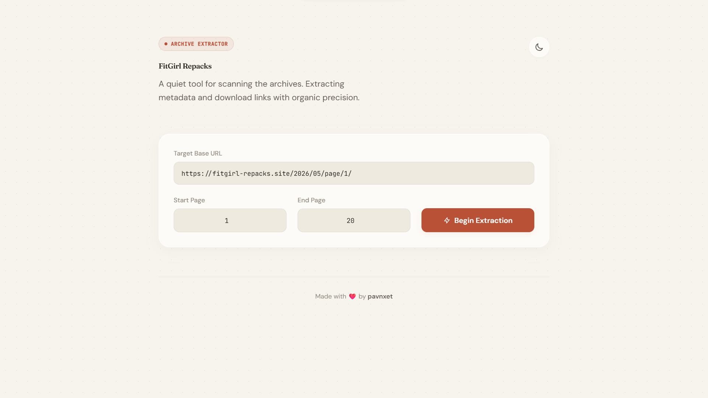
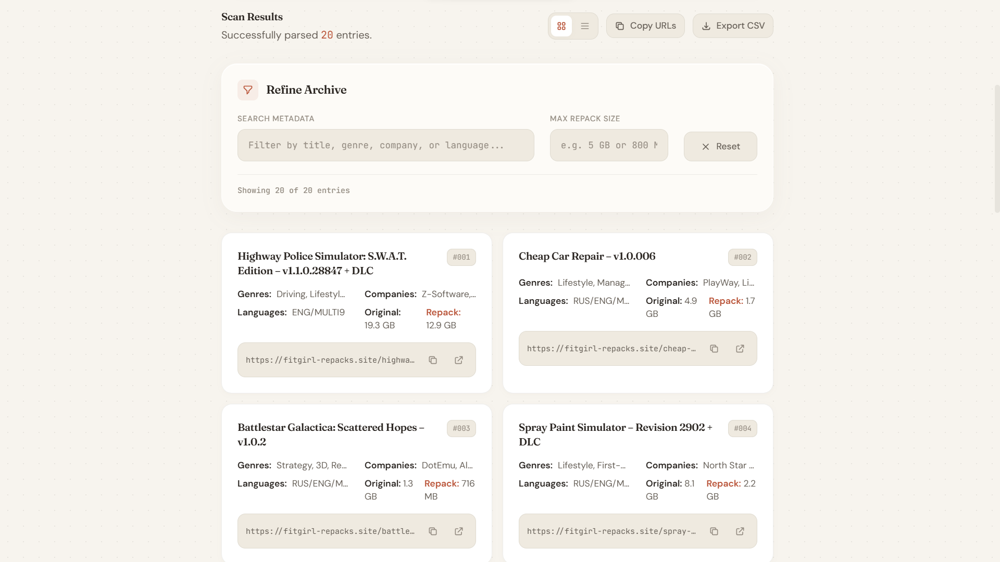

The Story Behind It
Whenever I wanted to browse older entries from the FitGirl archive, I found myself opening page after page, manually searching for specific games, genres, or publishers. It worked, but it was slow, repetitive, and honestly a bit frustrating.
I looked around for existing tools that could help organize or search the archive more efficiently. Most options were either outdated, focused on a different use case, or lacked the filtering features I wanted. Some tools could scrape data, but they weren't particularly pleasant to use and often required local setup.
What I really wanted was something simple: point it at an archive section, scan multiple pages quickly, and instantly search through all the results in one place.
So I decided to build it myself.
What the Project Does
FitGirl Repacks Archive Scanner is a web-based tool that scans archive pages and turns them into a searchable database you can explore in real time.
Instead of opening dozens of archive pages manually, users can scan a range of pages, collect metadata about each game, and instantly search through titles, genres, publishers, languages, and size information. The results can be viewed in different layouts and exported for later use.
The goal is simple: make archive exploration faster, easier, and more organized.

How It Works
The project runs entirely on Cloudflare Workers, which means the backend scraper and frontend interface are served from a single serverless application. I chose Cloudflare Workers because they are lightweight, easy to deploy, and perfect for handling short-lived scraping tasks.
When a user submits an archive URL and page range, the worker fetches multiple archive pages concurrently. The HTML content is then parsed to extract useful information such as game titles, publishers, genres, supported languages, and size details.
The extracted data is returned to the browser, where users can filter, search, switch views, copy links, and export results without making additional requests. Keeping most of the interaction client-side makes the interface feel fast and responsive.
Exploring the Features
Concurrent Archive Scanning
The scanner can process multiple archive pages at the same time rather than waiting for each request to finish sequentially. This dramatically reduces waiting time when searching large page ranges.

Real-Time Search and Filtering
Users can instantly search across titles, genres, companies, and language information. Results update immediately as filters are applied.
Grid and List Views
Some users prefer detailed cards, while others prefer a compact overview. The interface supports both layouts and lets users switch between them instantly.
CSV Export
After filtering results, users can export the data into a CSV file for further analysis or personal organization.
Copy-to-Clipboard Actions
Every game entry includes quick actions for copying URLs directly to the clipboard, making it easier to save or share entries.
Dark and Light Themes
The interface includes both dark and light modes with a custom editorial-inspired design rather than a typical utility-focused dashboard.
Challenges I Ran Into
One of the biggest challenges was balancing speed with reliability. Scraping many pages sequentially was too slow, but sending a large burst of requests simultaneously increased the chance of triggering rate limits. To solve this, I implemented concurrent request batching along with small randomized delays between requests. This allowed the scanner to remain fast while behaving more like a normal user.
"Scraping many pages concurrently speeds up scanning but runs the risk of rate-limiting. Balancing this required intelligent request batching and delay mechanics to mirror human behavior."
Another challenge was extracting clean metadata from highly variable page content. Information such as genres, languages, developers, and size details didn't always appear in exactly the same format. I spent quite a bit of time refining parsing patterns so the extracted data remained consistent even when page formatting varied.
Performance was also important because large scans could return a significant amount of data. I wanted searching and filtering to feel instant. Instead of repeatedly querying the backend, I moved filtering logic into the browser so users could interact with results without waiting for additional requests.
The user interface ended up being more challenging than expected as well. Many scraping tools work perfectly but feel unpleasant to use. I wanted something that looked more like a thoughtfully designed application than a utility page, which led to multiple iterations on typography, spacing, view modes, and theme design.
Try It Yourself
The project is fully live and open for you to try or self-host. Get started with the links below:
- Live Tool: Open the Live Tool Demo
- GitHub Repository: View the GitHub Repository
- Setup instructions are available in the project README.
What's Next
There are several ideas I'd like to explore in future versions. Better sorting options, saved searches, richer metadata extraction, and improved analytics are all on the list. I'm also interested in experimenting with caching strategies to make repeated scans even faster.
As with most side projects, the best improvements often come from people actually using the tool. If you have ideas, find bugs, or want to contribute, feel free to open an issue or submit a pull request on GitHub.